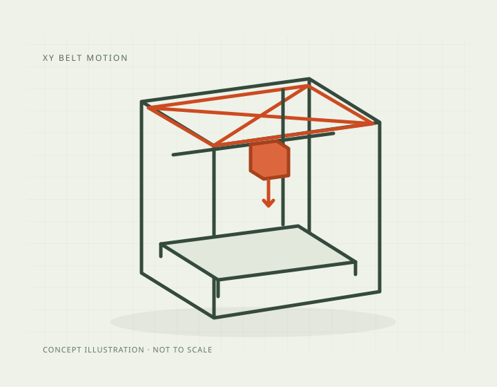

Build volume
250 x 220 x 270 mm (manufacturer figure)
Advertised dimensions; check usable space and variants.
Fully enclosed CoreXY Prusa with an all-steel exoskeleton, active chamber heating to 55 C and the Nextruder/load-cell stack from the MK4S.

250 x 220 x 270 mm (manufacturer figure)
Advertised dimensions; check usable space and variants.
290 C claimed max nozzle temperature. Prusa's comparison table adds "400 C w/ HT" for the optional HT hotend, which its 13 August 2026 blog post says will only become available in September 2026 - so 400 C is a forthcoming option, not a shipping specification
Published limits; hardware and firmware limits may differ.
$1,202.78 assembled, $925.00 as an assembly kit, on prusa3d.com, Aug 2026. Bundles run to $1,301.85 with camera and advanced filtration. Prusa's own marketing table on the same page quotes "from $1,299" assembled, which does not match the live e-shop price
Dated listing, not a live offer. Read the configuration and region.
Understand the hardware, explore compatible changes and find a diagnostic starting point when something goes wrong. Expand the specification sections for every recorded value, condition and original reference.
Dimensions, construction and the hardware that moves the print.
| Property and unit | Published value and conditions | Sources and dates |
|---|---|---|
| Manufacturer & exact marketed model name (verify the exact product identity first) | Prusa CORE One+ (Gen 2). Prusa's e-shop lists "Prusa CORE One+ (Gen 2)" and "Prusa CORE One+ (Gen 2) Assembly kit" | 2 sources |
| Release date (announcement and actual shipping) | The CORE One+ (Gen 2) refresh was announced on 13 August 2026, on sale immediately, with the first assembled units shipping at once and kits, upgrade kits and individual parts rolling out over the following weeks. It succeeds the CORE One and CORE One+ on the same platform | |
| Street price (USD; dated snapshot per entry) | $1,202.78 assembled, $925.00 as an assembly kit, on prusa3d.com, Aug 2026. Bundles run to $1,301.85 with camera and advanced filtration. Prusa's own marketing table on the same page quotes "from $1,299" assembled, which does not match the live e-shop price | 2 sources |
| Variants & sibling models — and how to tell them apart (spec-contamination risk) | Three generations share the CORE One name: the original CORE One, the CORE One+, and the CORE One+ (Gen 2), with paid upgrade kits between them (CORE One+ to CORE One+ (Gen 2), and an MK4S to CORE One+ (Gen 2) conversion kit). The specifications recorded here are those published on Prusa's current CORE One+ (Gen 2) page and should not be assumed to hold for a first-generation CORE One. The INDX 4-tool and 8-tool machines are variants of the same product page, and the CORE One L is a larger, separate machine | 3 sources |
| Market position: superseded? successor announced? | Current model and Prusa's mainstream enclosed machine, above the MK4S and below the CORE One L+ | 1 source
|
| Property and unit | Published value and conditions | Sources and dates |
|---|---|---|
| Build volume X×Y×Z (mm) — advertised vs actually usable | 250 x 220 x 270 mm (manufacturer figure) | 1 source |
| Machine footprint (mm) & clearance needed (cable/spool overhang) | 415 x 444 x 555 mm (X x Y x Z) | 1 source |
| Net weight (kg) | 22.5 kg | 1 source |
| Frame construction & material | All-steel exoskeleton (Prusa's own comparison wording, against "aluminium extrusions and frame" for the MK4S) | 1 source |
| Enclosure: open / enclosed; panel material; door/lid | Fully enclosed with a door-open sensor and active chamber temperature control up to 55 C; HEPA/advanced filtration is an optional add-on | |
| Passive chamber temperature reached (if enclosed; measured values preferred) | Active chamber heating, maximum 55 C (manufacturer figure) | 1 source |
The official procedure checks gantry squareness before tension adjustment. Follow the selected printer’s belt-tuning wizard rather than copying another model’s frequency target.
Applies to: CORE One+ (Gen 2); confirm the installed belt generation and follow its wizard range.
| Property and unit | Published value and conditions | Sources and dates |
|---|---|---|
| Kinematics (bedslinger i3 / CoreXY / other) | CoreXY - stated as such in Prusa's own comparison table against the Cartesian MK4S | 1 source |
| Stepper motors (frame size, step angle, brand if known) | 0.9 degree X and Y stepper motors | 1 source |
| Stepper drivers (exact model e.g. TMC2209; UART/SPI; sensorless homing?) | Trinamic 2130 | 1 source |
Extrusion, heating, leveling and material handling.
The official conversion replaces the single Nextruder with the INDX tool system and its dedicated filament paths. Select the kit for the printer generation.
Applies to: CORE One+ Gen 2 kit differs from earlier CORE One/+ kits: its GT1.5 belts and expansion joints are already installed.
| Property and unit | Published value and conditions | Sources and dates |
|---|---|---|
| Type (direct drive / bowden) & design name | Nextruder direct drive, E3D V6 compatible with an adapter; planetary gear system with a 10:1 ratio; aluminium heatsink and all-metal hotend | 1 source |
| Gear ratio & drive gear material | 10:1 planetary gearbox | 1 source |
The supported kit changes the hotend, main plate and idler arrangement for the manufacturer’s high-temperature material profiles; finish with its installation and recalibration procedure.
Applies to: CORE One+ (Gen 2) is explicitly supported. INDX, MK4S and XL+ are excluded from this kit.
| Property and unit | Published value and conditions | Sources and dates |
|---|---|---|
| Hotend design (proprietary/standard; quick-swap mechanism?) | Quick-swap nozzle system; high-flow Prusa brass CHT 0.4 mm nozzle supplied. An optional HT hotend raises the ceiling to 400 C | 1 source |
| Max nozzle temp claimed AND firmware max temp limit (both values) | 290 C claimed max nozzle temperature. Prusa's comparison table adds "400 C w/ HT" for the optional HT hotend, which its 13 August 2026 blog post says will only become available in September 2026 - so 400 C is a forthcoming option, not a shipping specification |
| Property and unit | Published value and conditions | Sources and dates |
|---|---|---|
| Max bed temp claimed AND firmware limit | 120 C max heatbed temperature | 1 source |
| Bed surface (material, texture, coating), single/double-sided | Magnetic heatbed with removable PEI spring-steel sheets; whole-bed heating regardless of object size | 1 source |
| Property and unit | Published value and conditions | Sources and dates |
|---|---|---|
| Auto bed leveling: probe technology (inductive / strain gauge / load cell / touch probe) | Load-cell sensor - fully automatic first-layer calibration with the nozzle as the probe | 1 source |
| Property and unit | Published value and conditions | Sources and dates |
|---|---|---|
| Filament runout sensor (type, location) | Two filament sensors, plus a door sensor and five Semitec thermistors with fan RPM monitoring | |
| Multi-material/multi-color capability or official upgrade path | MMU3 for five filaments, or the INDX system for up to eight, both officially supported | 1 source |
| Property and unit | Published value and conditions | Sources and dates |
|---|---|---|
| Part-cooling fan(s): count, size, ducting design | High-performance turbine part-cooling fan with 360-degree cooling, the same arrangement as the MK4S | 1 source |
| Property and unit | Published value and conditions | Sources and dates |
|---|---|---|
| Officially supported filament list | PLA, PETG, Flex, PVA, PC, PP, CPE, PVB, and - as advanced materials in the heated chamber - ABS, ASA, HIPS and PA | 1 source |
Firmware, controls, connections and calibration.
Use the failed subtest to choose the diagnostic branch: fan obstructions/connections, loadcell mounting/stability or filament-sensor wiring. Repeat that test after addressing its documented cause.
Applies to: CORE One+ support links this procedure for Gen 2; INDX has a separate calibration sequence.
| Property and unit | Published value and conditions | Sources and dates |
|---|---|---|
| Mainboard model & MCU (exact chip markings if teardowns exist) | Custom 32-bit xBuddy board with STM32 | 1 source |
| PSU (brand, wattage, rail voltage) | 240 W PSU with hardware power panic | 1 source |
| Total rated power draw | Power consumption 90 W printing PLA, 110 W printing ABS (manufacturer figures) | 1 source |
Use the current model page’s stock firmware and release notes when maintaining the supplied controller.
Applies to: Select CORE One+ (Gen 2) hardware; INDX requires its separate printer/firmware branch.
| Property and unit | Published value and conditions | Sources and dates |
|---|---|---|
| Firmware base & current version (Klipper fork / Marlin fork / proprietary) | Open-source Prusa Buddy firmware. The source tree (prusa3d/Prusa-Firmware-Buddy on GitHub) explicitly covers the Original Prusa MINI/MINI+, MK4, XL and CORE One and was last pushed to in August 2026. Updates are applied from a USB drive, through Prusa Connect or through the Prusa mobile app |
| Property and unit | Published value and conditions | Sources and dates |
|---|---|---|
| Display: size, type, touch? | 3.5-inch 65k-colour graphic screen with touch control | 1 source |
| On-device UI capabilities (model preview, per-object controls, etc.) | On-device touch UI; remote monitoring and printing through Prusa Connect and the Prusa mobile app; firmware updates from USB, Prusa Connect or the app | 1 source |
| WiFi (band/standard), Ethernet, USB ports, SD/flash-drive | Ethernet and Wi-Fi (NFC receiver plus an optional Wi-Fi module), USB drive for print files | 1 source |
| Camera: built-in / optional? Resolution & framerate (verify — marketing often omits real fps) | Optional in-chamber camera solution (Buddy3D camera bundle listed at $1,237.03 against $1,202.78 for the bare printer) | 2 sources |
Published safeguards, support terms and independent evidence.
| Property and unit | Published value and conditions | Sources and dates |
|---|---|---|
| Thermal runaway protection (verify in firmware source if at all possible) | The xBuddy platform carries hardware overcurrent protection that cuts heater and heatbed power above 15 A, and the firmware is open-source and auditable |
| Property and unit | Published value and conditions | Sources and dates |
|---|---|---|
| Warranty length & support reputation (evidence, not vibes) | 2-year warranty for consumers in the EU, Liechtenstein, Switzerland, Norway and Iceland; 1 year for EU enterprises and 1 year for the rest of the world, which includes the United States. A printer bought from a reseller or privately carries 1 year from the original delivery date and is handled by the reseller. Prusa advertises 24/7 chat and e-mail support in seven languages | 2 sources
|
This guide presents the catalog’s sourced record for this exact model. Source dates belong to each reference; a page update does not mean every specification has been rechecked.
Prices are dated listing snapshots, with configuration, regional and sale conditions. They are not current offers. Unknown values remain unfilled.
Firmware, variants and available accessories can change. Read the original reference before making a purchase or planning a process.
Firmware, modifications and troubleshooting links are checked against the model and stated hardware or firmware revision. A creator’s compatibility claim is not a fit test by this site. Official troubleshooting describes a diagnostic route; individual reports do not establish a failure rate.
This review did not verify printable modifications for this exact model. That is a research gap, not a claim that none exist.